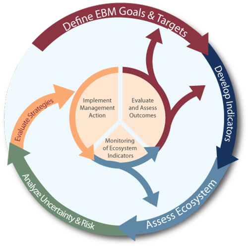
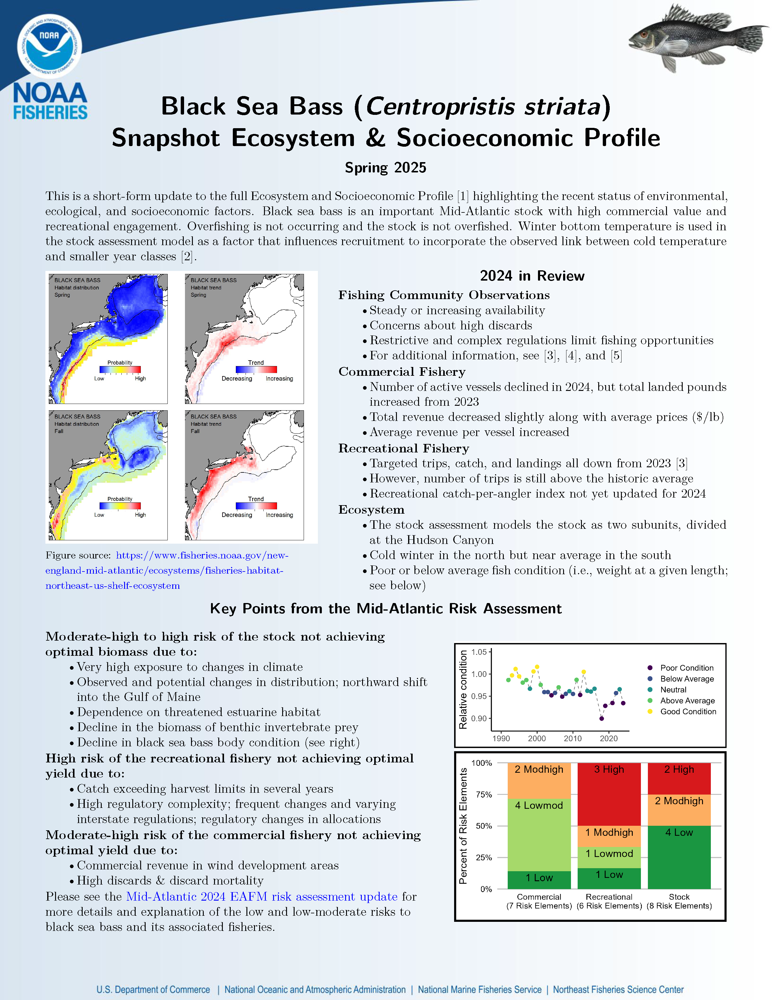
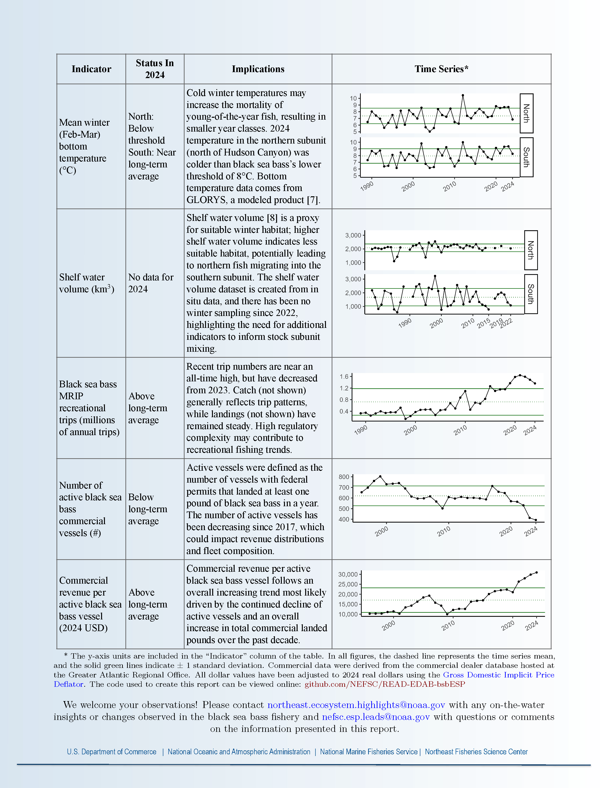
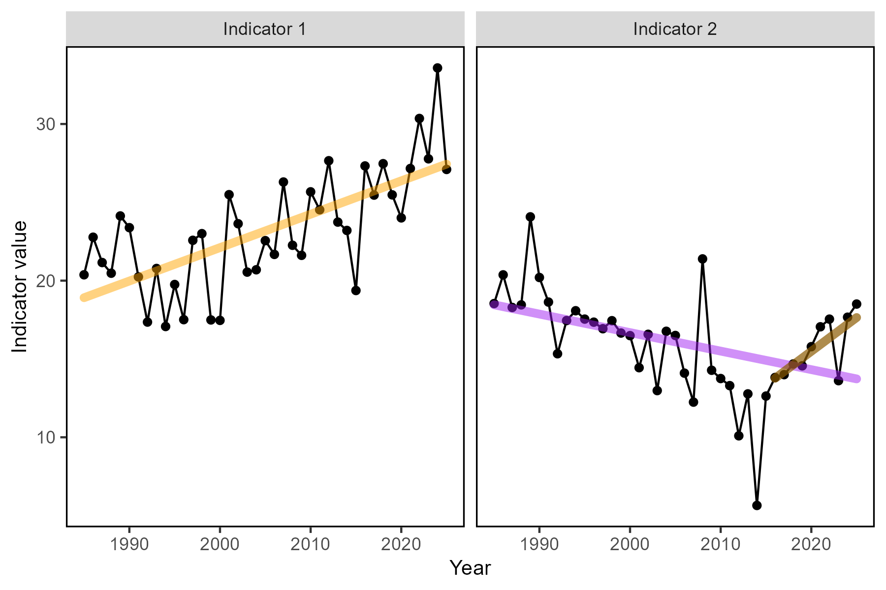
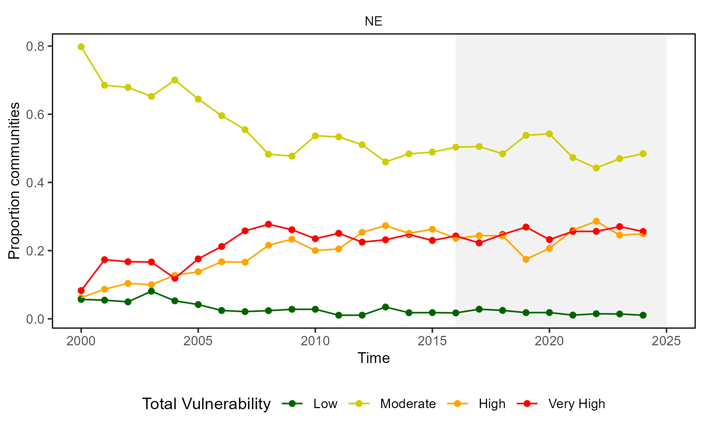

State of the Ecosystem
New England 2026
NEFMC SSC Update
March 25, 2026
Ecosystem reporting at different levels of organization
The SOE provides information at the ecosystem level

Ecosystem and Socioeconomic Profiles (ESPs) provide information at the stock level
Ecosystem and Socioeconomic Profiles support fisheries science and management by providing additional context that can help inform the development of the stock assessment model, as well as by communicating contextual information to fisheries managers.


2026 Report Structure
- Graphical summary
- Page 1 report card re: performance metrics
- Page 2 risk summary bullets
- Page 3 2025 snapshot
- Performance relative to management objectives
- What does the indicator say–up, down, stable?
- Why do we think it is changing: explore drivers
- Risks to meeting management objectives
- Same What and Why as Performance Section
- 2025 Highlights

State of the Ecosystem report scale and figures

A glossary of terms (2021 Memo 5), detailed technical methods documentation and indicator data are available online.
Key to figures

Long-term trends assessed only for 30+ years: more information
Short-term trends assessed for last 10 years of data OR a full time series <30 years
Orange line = significant increase
Purple line = significant decrease
No color line = not significant or < 30 years
Grey background = last 10 years
2025 Performance relative to management objectives


Objective: New England Seafood production 


Objective: New England Commercial Profits 

Objective: New England Commercial Profits 

Objective: New England Recreational opportunities: Effort 

Objective: New England Recreational opportunities: Fleet and Catch Diversity 


Objective: Social and Cultural
Indicators: Community Environmental Risk

- Measures of how dependent communities are on species sensitive to environmental variability (temperature, acidifcation, etc.)
- Majority of communities in moderate risk level but more are shifting towards high/very high dependence on vulnerable species

Objectives: Coastwide Protected species Maintain bycatch below thresholds 


Objectives: Coastwide Protected species Recover endangered populations 

2025 Risks to meeting fishery management objectives


Risks to Managing Spatially: Future considerations
- Distribution shifts caused by changes in thermal habitat and ocean circulation are likely to continue as long as long-term trends persist.
- Episodic and short-term events (see 2025 Highlights) may increase variability in the trends.
- We need a better understanding of the drivers of distribution shifts to make predictions
Forecasts
- 10 year oceanographic projections forecast a temporary pause in warming resulting from variability in circulation and a southward shift of the Gulf Stream not a shift in the long-term patterns.
- Evaluating how well these forecasts can predict episodic and anomalous events that are outside of the long-term patterns.
Management Considerations
- Adapting management strategies to changing stock distributions and dynamic ocean processes
- Continued monitoring of populations in space and evaluating management measures against possible future spatial distributions.
- Use East Coast Climate Scenario Planning and the subsequent East Coast Coordination Group to help coordinate management responses to change.

Risks to Setting Catch Limits
Future considerations
Processes that control fish productivity and mortality are dynamic, complex, and are the result of the interactions between multiple changing system drivers.
Managers should consider that historic environment conditions and productivity may no longer represent likely future scenarios.
Assumptions for species’ growth, reproduction, and natural mortality should continue to be evaluated for individual species.
With observations of system-wide productivity shifts of multiple managed stocks, more research is needed to determine whether regime shifts or ecosystem reorganization are occurring, and how this should be incorporated into management.

Risks: Offshore Wind Development
- Above: Council request to look at Mid-Atlantic ports that are catching NEFMC-managed species in the wind lease areas
- Ports shown have >50% of landings or revenue from NEFMC-managed species in the wind lease areas
- Right: Lease areas overlap with North Atlantic right whale habitat. Development may alter local oceanography and prey availability, increase vessel strike risk, and result in pile driving noise impacts.
- Current plans for buildout of offshore wind in a patchwork of areas spreads the impacts differentially throughout the region.

THANK YOU! SOEs made possible by (at least) 88 contributors from 20+ institutions
Sydney Alhale (SEFSC)
Andrew Applegate (NEFMC)
Christina Asante
Heather Baertlein (NMFS Atlantic HMS Management Division)
Kimberly Bastille
Aaron Beaver (Anchor QEA)
Andy Beet
Brandon Beltz
Kristan Blackhart
Ruth Boettcher (Virginia Department of Game and Inland Fisheries)
Mandy Bromilow (NOAA Chesapeake Bay Office)
Joseph Caracappa
Samuel Chavez-Rosales
Baoshan Chen (Stony Brook University)
Zhuomin Chen (UConn)
Doug Christel (GARFO)
Patricia Clay
Lisa Colburn
Jennifer Cudney (NMFS Atlantic HMS Management Division)
Tobey Curtis (NMFS Atlantic HMS Management Division)
Kiley Dancy (MAFMC)
Cameron Day
Art Degaetano (Cornell U)
Geret DePiper (TAMUCC)
Bart DiFiore (MA DMF)
Gregory Ellis
Emily Farr (NMFS Office of Habitat Conservation)
Michael Fogarty
Paula Fratantoni
Kevin Friedland
Marjy Friedrichs (VIMS)
Sarah Gaichas (Hydra Scientific)
Ben Galuardi (GARFO)
Avijit Gangopadhyay (School for Marine Science and Technology, University of Massachusetts Dartmouth)
James Gartland (VIMS)
Lori Garzio (Rutgers University)
Glen Gawarkiewicz (WHOI)
Maxwell Grezlik
Laura Gruenburg (Stony Brook University)
Sean Hardison (UA Fairbanks)
Amanda Hart
Dvora Hart
Cameron Hodgdon
Cliff Hutt (NMFS Atlantic HMS Management Division)
Kimberly Hyde
Grace Jensen (WHOI)
Toni Kerns (ASMFC)
John Kocik
Steve Kress (National Audubon Society’s Seabird Restoration Program)
Young-Oh Kwon (Woods Hole Oceanographic Institution)
Scott Large
Gabe Larouche (Cornell U)
Daniel Linden
Andrew Lipsky
Sean Lucey (@ Orchard)
Don Lyons (National Audubon Society’s Seabird Restoration Program)
Kevin Madley
George Maynard
Chris Melrose
Anna Mercer
Shannon Meseck
David Moe Nelson (NCCOS)
Kiera Morrill
Ryan Morse
Ray Mroch (SEFSC)
Nicole Mucci
Brandon Muffley (MAFMC)
Robert Murphy
Kimberly Murray
Chris Orphanides
Stephanie Owen
Richard Pace
Debi Palka
Tom Parham (Maryland DNR)
CJ Pellerin (NOAA Chesapeake Bay Office)
Charles Perretti
Kristin Precoda
Grace Roskar (NMFS Office of Habitat Conservation)
Andrew Ross (GFDL)
Jeffrey Runge (U Maine)
Grace Saba (Rutgers University)
Vincent Saba
Sarah Salois
Chris Schillaci (GARFO)
Amy Schueller (SEFSC)
Teresa Schwemmer (URI)
Tarsila Seara
Dave Secor (CBL)
Angela Silva
Adrienne Silver (WHOI)
Emily Slesinger
Laurel Smith
Linus Stoltz (Commercial Fisheries Research Foundation)
Talya tenBrink (GARFO)
Abigail Tyrell
Rebecca Van Hoeck
Ron Vogel (University of Maryland Cooperative Institute for Satellite Earth System Studies and NOAA/NESDIS Center for Satellite Applications and Research)
Bruce Vogt (NOAA Chesapeake Bay Office)
John Walden
Harvey Walsh
Joseph Warren
Sarah Weisberg (ICES)
Changhua Weng
Timothy White (Environmental Studies Program, BOEM)
Dave Wilcox (VIMS)
Sarah Wilkin (NMFS Office of Protected Resources)
Mark Wuenschel
Zhitao Yu
Qian Zhang (U Maryland)
NEFSC staff